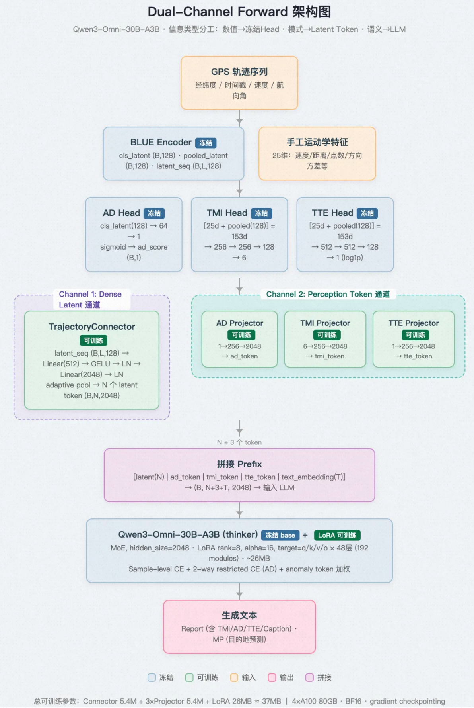

全模态大模型·出行安全¶
面试口述：三级 loss 设计（1 分钟版）¶
简历句：Sample-level CE、Restricted CE 与异常加权 CE，解决多任务失衡、信号稀释与类别不平衡。面试官问"这是什么意思"时的回答：
这三个是我们多任务训练里递进的三层 loss 设计，每层解决一个不同粒度的问题。
背景是这样：我们让模型统一输出一份 Report，里面同时包含轨迹描述、交通方式、异常检测等多个任务的答案。这就带来第一个问题——轨迹描述有一两百个 token，而异常检测的答案只有一个 token。标准的交叉熵是按 token 平均的，等于一条长文本样本的梯度贡献相当于两百条分类样本，分类任务的信号完全被淹没了。所以第一层我们改用 Sample-level CE：先在每个样本内部对 token 取平均，再对 batch 里的样本取平均，这样每条样本权重相等，任务间的平衡就回归到数据配比本身了。
但这只解决了任务之间的公平，样本内部还有问题：异常检测那一个 token 混在整段 Report 里，还是被周围上百个描述性 token 稀释，我们实际观察到 AD 的生成 F1 是 0，模型永远输出"正常"。所以第二层加了 Restricted CE：只在 AD 标签那一个位置额外算一份 loss，并且不在 15 万的大词表上做 softmax，只在"正常"和"异常"两个候选 logit 之间做二分类——这同时也消掉了大词表的先验偏置。
第三层针对的是类别不平衡：正常样本远多于异常样本，模型无脑预测"正常"就能把 loss 压低，但安全场景里漏检的代价远大于误报。所以我们做异常加权：对真实标签为异常的样本，把它的 loss 乘一个 8 倍左右的权重，在梯度层面等价于把异常样本过采样了 8 倍。
总结就是：第一层管任务之间的公平，第二层管样本内部关键 token 不被稀释，第三层管类别之间的公平。三层叠加后，AD 的生成 F1 从 0 提到了 0.767，基本追平了冻结判别头的水平。
讲法要点：按"问题→做法"的因果链讲，每层先说踩了什么坑再说怎么解，最后落到数字上——让面试官看出这是实际调出来的，不是背概念。
面试口述：显存/推理五件套在本项目中的应用与开启方式¶
简历句：梯度累积、梯度检查点与混合精度控制显存占用；vLLM 张量并行与连续批处理实现推理提速（163s→84s）。
背景：Qwen3-Omni-30B 底座冻结 + max_length=8192，只有 4 张 A100（80GB），激活值直接打爆显存。训练侧三件套配合后显存降 60%、速度降 30%；推理侧两件套让 500 条评测 163s→84s。
训练侧三件套：解决显存 OOM¶
1. 梯度检查点（省得最多）：前向不保存中间激活值，反向需要时重算一遍——用 ~30% 额外计算换掉激活值显存（48 层 × 8192 序列的激活值正是 OOM 元凶）。
model.gradient_checkpointing_enable() # 一行开启（dual_channel_model.py:52）
# config.yaml:48 → gradient_checkpointing: true
2. BF16 混合精度：权重、激活值显存减半，A100 算力更高。选 BF16 而非 FP16：指数位与 FP32 相同（8 位），不用 loss scaling 也不会溢出，稳定性优先。
model = AutoModel.from_pretrained(..., torch_dtype=torch.bfloat16) # config.yaml:47
with torch.autocast("cuda", dtype=torch.bfloat16): # BF16 无需 GradScaler
loss = model(batch)
# HF Trainer 则只需 TrainingArguments(bf16=True) # config.yaml:67
3. 梯度累积：单卡塞不下大 batch，就拆成 micro-batch，梯度不清零攒够再 step——用时间换 batch size，保证多任务混训每步各任务都有足够样本。
for i, batch in enumerate(loader):
loss = model(batch)
(loss / accum_steps).backward() # 先除后累（train.py:102）
if (i + 1) % accum_steps == 0:
optimizer.step(); optimizer.zero_grad()
# config.yaml:58-59 → per_device_batch_size: 1 + grad_accum_steps: 16 → 等效 batch 16
分工一句话：检查点砍激活值，BF16 砍所有张量的一半字节，累积砍 batch 维度——三个砍的维度互不重叠，所以能叠加。
推理侧两件套：500 条评测 163s→84s¶
4. vLLM 张量并行（TP=4）：把 30B 每一层从层内切开分到 4 卡同时算（Megatron 式按行/列切矩阵）——区别于训练时 device_map 的按层放置（一卡算其他卡闲），TP 是真并行。
5. 连续批处理：静态批处理要等 batch 里最长那条生成完才换批，短序列全在空转；vLLM 按 iteration 级调度，谁生成完立刻补新序列进来，GPU 始终满载——本项目 Report 长短差异大（AD 短、Caption 长），收益特别明显。
llm = LLM(model=path,
tensor_parallel_size=4, # 一个参数搞定 4 卡张量并行（vllm_infer.py:53）
dtype="bfloat16")
outputs = llm.generate(prompts, sampling_params) # 连续批处理是 vLLM 默认行为，零配置
总结：检查点一行 enable()、BF16 一个 dtype、累积一个除法+取模、TP 一个 tensor_parallel_size、continuous batching 零配置。工程量不在"开启"，而在开启后验证显存/精度/等效 batch 是否符合预期。
〇、名词解释¶
1. 模型自动分片 / 多卡模型切分¶
定义：将一个大模型的不同层或模块分布到多张 GPU 上，使单张 GPU 装不下的模型能够分布式加载和运行。
本项目实现：使用 Hugging Face Transformers 的 device_map="auto" 机制，根据每张 GPU 的显存容量，自动决定每一层应该放在哪张卡上。本项目将 Qwen3-Omni-30B-A3B 的 48 层 decoder、embedding 层、lm_head 等模块切分到 4 张 A100（80GB）上。
为什么替代 DDP：
传统分布式训练使用 DDP（DistributedDataParallel），其工作流程是：
- 每张卡上有一份完整的模型副本；
- 每张卡用不同数据计算梯度；
- 所有卡通过 All-Reduce 同步梯度；
- 各副本同时更新参数。
DDP 默认所有参数都会参与反向传播并产生梯度。但在本项目中，Qwen3-Omni-30B 底座被冻结（requires_grad=False），只有 TrajectoryConnector（5.4M）、3×Perception Projector（5.4M）和 LoRA（26M）需要梯度。当 DDP 的 reducer 等待冻结参数的梯度时，这些梯度永远不会产生，进程就会永久阻塞，即「DDP 死锁」。
模型自动分片 vs DDP 的本质区别：
| 维度 | DDP | 模型自动分片 |
|---|---|---|
| 模型放置 | 每张卡完整副本 | 不同层在不同卡 |
| 梯度同步 | 需要 All-Reduce | 不需要跨卡同步 |
| 适用场景 | 全部参数可训练 | 大模型冻结、小模块可训练 |
| 本项目 | ❌ 死锁 | ✅ 可用 |
副作用与处理：
由于 lm_head 和输入 embedding 可能被切到不同卡上，而 labels 通常与 input_ids 在同一设备，会导致 logits 和 labels 不在同一张卡。本项目通过手动 gather 将 labels 移动到 logits 所在设备，再计算 CE loss。
2. DDP 死锁¶
定义：在使用 DDP 训练时，由于某些参数长期不产生梯度，导致梯度同步操作永久等待，程序卡住不动的现象。
技术细节：
DDP 在初始化时会为每个参数注册一个 gradient bucket。反向传播时，每个 bucket 满了就触发一次 All-Reduce。如果某个 bucket 对应的参数被冻结（requires_grad=False），该 bucket 永远等不到梯度，All-Reduce 就会一直挂起。
本项目场景：
- 总参数：30B（底座）+ 5.4M（Connector）+ 5.4M（Projector）+ 26M（LoRA）≈ 30B
- 可训练参数：~37M（占比 0.12%）
- 冻结参数：~30B（占比 99.88%）
当 DDP 等待 30B 冻结参数的梯度时，程序死锁。这是冻结大模型 + DDP 的经典问题。
解决方案对比：
- 模型自动分片（本项目采用）：不用 DDP，按层切分模型。
find_unused_parameters=True：让 DDP 跳过没有梯度的参数，但会显著降低训练速度，且对 30B 模型不稳定。- 解冻部分底座参数：破坏预训练知识，通常不可取。
3. Gradient Checkpointing（梯度检查点）¶
定义：一种用额外前向计算换取显存的优化技术，又称 "activation checkpointing"。
原理：
标准训练中，正向传播会保留每一层的中间激活值（activations），用于反向传播计算梯度。对于 Transformer，这些激活值占用了大量显存，尤其是长序列和大 batch。
Gradient checkpointing 选择只保留部分层的输入，丢弃中间激活值。反向传播时，从最近的检查点重新执行前向计算，恢复被丢弃的激活值，再计算梯度。
显存与速度权衡：
- 显存：从 \(O(L)\) 降低到 \(O(\sqrt{L})\) 或 \(O(\log L)\)，取决于检查点策略。
- 速度：反向传播时需要额外做一次前向计算，训练时间增加约 20%-40%。
本项目数据：
- 模型：Qwen3-Omni-30B-A3B（30B 参数，MoE）
- 序列长度：max_length = 8192
- 效果：开启 gradient checkpointing 后，显存降低约 60%，训练速度降低约 30%。
- 结论：速度损失可接受，显存收益巨大，必须开启。
适用条件：
- 模型参数量大；
- 序列长度长；
- batch size 或激活值成为显存瓶颈。
4. BF16¶
定义：Brain Floating Point 16，一种 16 位浮点数格式，由 Google 提出。
与 FP32 / FP16 的对比：
| 格式 | 位数 | 尾数 | 指数 | 显存占用 | 数值稳定性 |
|---|---|---|---|---|---|
| FP32 | 32 | 23 | 8 | 1x | 高 |
| FP16 | 16 | 10 | 5 | 0.5x | 低（容易溢出/下溢） |
| BF16 | 16 | 7 | 8 | 0.5x | 高（指数范围与 FP32 相同） |
为什么大模型训练常用 BF16：
- 显存占用是 FP32 的一半；
- 矩阵计算速度通常比 FP32 快 1.5-2 倍；
- 指数位与 FP32 相同，动态范围大，训练大模型时比 FP16 更稳定，不容易出现梯度消失/爆炸。
本项目使用：
- 采用 BF16 混合精度训练；
- 与 gradient checkpointing、梯度累积共同构成 30B 模型能在 4 卡 A100 上训练的显存优化三件套；
- 部分敏感操作（如 loss scaling、optimizer states）仍保持 FP32 精度。
5. 梯度累积¶
定义：一种用多次小步前向换取等效大 batch 的技术。
标准训练流程：
for batch in dataloader:
loss = model(batch)
loss.backward()
optimizer.step() # 每步更新
optimizer.zero_grad()
梯度累积流程（以 accumulation_steps=4 为例）：
for i, batch in enumerate(dataloader):
loss = model(batch) / accumulation_steps
loss.backward()
if (i + 1) % accumulation_steps == 0:
optimizer.step() # 累积 4 步后更新一次
optimizer.zero_grad()
效果：
- 等效 batch size = per_device_batch_size × accumulation_steps × num_gpus
- 每次前向只处理小 batch，显存占用小
- 参数更新频率降低，训练速度略有下降
本项目使用：
- 4 卡 A100 训练 30B 模型；
- 每张卡 batch size 较小，通过梯度累积达到目标等效 batch size；
- 与 gradient checkpointing、BF16 配合，使总显存可控。
6. vLLM Tensor Parallel（张量并行）¶
定义：vLLM 推理框架中的一种模型并行策略，将模型的权重矩阵沿隐藏维度切分到多张 GPU。
与张量并行的关系：
张量并行（Tensor Parallelism, TP）是 Megatron-LM 提出的一种并行方式。对于 Transformer 中的线性层 \(Y = XW\)，将权重矩阵 \(W\) 按列或按行切分到不同卡上，每张卡计算一部分，最后通过 All-Gather 或 Reduce-Scatter 聚合。
vLLM 中的实现：
- vLLM 内置了 Tensor Parallelism，通过
--tensor-parallel-size N启动； - 将每一层的 MLP、Attention 等模块沿 hidden dimension 切分；
- 适合单张 GPU 放不下整个模型，且需要低延迟推理的场景。
本项目使用：
- 30B 模型单卡放不下；
- 使用 vLLM tensor parallel 在 4 卡上并行部署；
- 解决模型加载问题，同时降低单条推理延迟。
与 Pipeline Parallelism 的区别：
| 并行方式 | 切分维度 | 通信特点 | 适合场景 |
|---|---|---|---|
| Tensor Parallel | 隐藏维度 | 每层的 All-Reduce | 单节点多卡，延迟敏感 |
| Pipeline Parallel | 层维度 | 层间点对点 | 跨节点，吞吐敏感 |
7. Continuous Batching（连续批处理）¶
定义：vLLM 中的一种动态调度策略，也称 "iter-level scheduling" 或 "inflight batching"。
传统 Static Batching 的问题：
假设一个 batch 有 3 个请求：
- 请求 A：生成 10 个 token 结束
- 请求 B：生成 50 个 token 结束
- 请求 C：生成 100 个 token 结束
Static Batching 会等 C 跑完 100 个 token 后，才释放整个 batch。A 和 B 结束后，GPU 仍在为 C 计算，但 batch 中其他位置空着，利用率低。
Continuous Batching 的做法：
每个生成 step 结束后，检查哪些请求已经完成。完成的请求被移出 batch，新的请求立即插入空位。这样 GPU 每个 step 都在处理满 batch。
效果：
- 大幅提升吞吐量（throughput）；
- 对延迟（latency）影响较小；
- 特别适合服务端部署，请求到达时间不确定。
本项目数据：
- 单卡逐条推理 500 条：163s
- vLLM tensor parallel（4 卡）+ continuous batching：84s
- 提速约 2 倍。
8. Sample-level CE 🚗¶
定义：按样本而非按 token 位置平均的交叉熵损失。
标准 CE 的问题：
标准 CE loss（shift CE：预测第 t+1 个 token，对所有有效 label token 位置求 loss）通常这样计算——batch 内所有 token 的 loss 求和 ÷ 总 token 数（HuggingFace 默认实现）：
其中 \(T_i\) 是第 \(i\) 个样本的输出长度。这意味着每个 token 对总 loss 的贡献相等。
在本项目中：
- Caption 任务输出可能 100+ token → 一条样本贡献 100+ 项 loss；
- AD/TMI 答案只有 1~2 个 token → 一条样本只贡献 1~2 项。
本质：token-level 平均 = 隐式地按"答案长度"给任务加权。按 token 平均时，一条 200 token 的 Caption 样本对梯度的影响 ≈ 200 条 AD 分类样本。即使数据配比 1:1，模型实际优化目标里 Caption 占 200/201 ≈ 99.5% 的权重——分类任务的梯度信号被完全淹没，表现为：caption 学得很好，AD/TMI 准确率不涨或极慢。长文本任务天然拿到超大权重，采样配比形同虚设。
Sample-level CE 的计算（两级平均）：
- 样本内：每条样本自己的所有 label token 先取均值——无论答案 200 token 还是 1 token，都被归一成"这条样本的平均 loss"，量纲一致；
- batch 内：再对 B 条样本取均值——每条样本权重相等。
这样一条分类样本和一条 caption 样本对总 loss（和梯度）的贡献恰好是 1:1，任务间的实际权重回归到数据配比本身，才能通过采样比例真正控制多任务平衡。
数值例子：
batch 有 2 个样本：x1 是 Caption（简化成 4 个 token），x2 是 AD（1 个 token，预测得很差）：
| token | 所属样本 | 真实类别概率 | CE |
|---|---|---|---|
| t1 | x1 | 0.9 | -log(0.9) = 0.105 |
| t2 | x1 | 0.8 | -log(0.8) = 0.223 |
| t3 | x1 | 0.7 | -log(0.7) = 0.357 |
| t4 | x1 | 0.6 | -log(0.6) = 0.511 |
| t5 | x2 | 0.2 | -log(0.2) = 1.609 |
原本的 token-level CE：所有 token 拉平，一次平均：
每个 token 权重都是 1/5 → x1 合计占 4/5，x2 只占 1/5，尽管 x2 错得最厉害（1.609），它对总 loss 的贡献（1.609/5 = 0.322）还没有 x1 四个"已经学得不错"的 token 合计（1.196/5 = 0.239）大多少。
现在的 sample-level CE：先样本内平均，再 batch 平均：
第一步，样本内均值：
得到 [0.299, 1.609]。第二步，batch 均值：
x1、x2 各占 1/2 → x2 的贡献为 1.609/2 = 0.805，占总 loss 的 84%，"AD 学得差"这个信号被清楚地暴露出来（token-level 下只有 0.561 里的 0.322，且被 5 个 token 摊薄）。
把 x1 放大到真实长度（200 token）再看：设 x1 每个 token CE ≈ 0.3，x2 仍为 1.609：
token-level 下总 loss 0.306 和"x2 根本不存在"时的 0.300 几乎没区别——AD 完全隐形；sample-level 下 x2 仍占一半权重。
实现要点：
loss_tok = F.cross_entropy(logits.transpose(1, 2), labels, reduction='none') # [B, T]
mask = (labels != -100).float()
loss_per_sample = (loss_tok * mask).sum(dim=1) / mask.sum(dim=1).clamp(min=1) # 样本内均值
loss = loss_per_sample.mean() # batch 均值
- 必须 mask 掉 prompt 部分和 padding（label=-100），分母只数有效 token；
- 梯度累积/多卡时要保证是"全局 sample 均值"——不要各 micro-batch 先 token 平均再简单相加，否则又引入偏差。
副作用（需要知道）：
长文本内部每个 token 的权重被稀释（200 token 各占该样本的 1/200，而分类样本的 1 个 token 独占 100%）。如果某任务既长又难，可能反过来学得偏慢——必要时可再叠加显式的任务权重系数调节。
本项目效果：
- 平衡了长文本生成任务和短文本分类任务；
- 避免 Caption 的 long loss 主导 AD/TMI 的 short loss；
- 是多任务训练 loss 平衡的必备设计。
一句话：token-level CE 把"答案长度"变成了隐式任务权重；sample-level CE 通过先样本内、后 batch 的两级平均，把权重单位从 token 拉回到 sample，是多任务混训 loss 平衡的第一步（第二步是 Restricted CE 解决样本内稀释，见下一节）。
9. Restricted CE 🚗¶
定义：一种只让特定 token 参与 loss 计算的交叉熵损失。
问题背景：
统一 Report 的输出格式类似：
交通方式：驾车 | 异常检测：异常 | 行驶时间：35分钟 | ...
AD 的答案只有"异常"这 1 个 token。在标准 CE 下，这个 token 的 loss 会被周围大量描述性 token 稀释，模型很难学会 AD 信号，导致 AD token "沉默"（总是预测正常）。
Restricted CE 的做法：
只对 AD 相关的 token 计算 loss，其它 token 被 mask 掉：
2-way restricted CE：
"2-way" 指保留两个关键位置：
- AD 标签 token 本身（如"异常"或"正常"）；
- 该标签前一个上下文 token（如"异常检测："），引导模型学会在看到这个前缀时输出正确标签。
本项目发现，在训练阶段做 restricted CE 比推理阶段通过 decoding 策略修正更有效。
10. Anomaly Token 加权 🚗¶
定义：针对类别不平衡问题的 loss 加权策略。
在三层 loss 设计中的位置：
这是三层 loss 设计里的第三层，解决的维度与前两层完全不同：
| 层级 | 问题 | 解法 |
|---|---|---|
| 任务之间 | Caption 200 token 淹没 AD 1 token | Sample-level CE（每样本一票） |
| 样本内部 | AD 那 1 个 token 被 Report 里描述性 token 稀释 | Restricted CE（只在 AD token 位置算 loss） |
| AD 类别内部 | 正常样本远多于异常样本 | Anomaly Token 加权 |
前两层保证了"AD 信号能被看见"，但看见之后还有最后一个坑——见下。
问题：
异常检测任务中，正常样本远多于异常样本（例如比例可能是 10:1 甚至更高）。模型为了最小化整体 loss，会发现：训练数据里 90%+ 都是"正常"，无脑输出"正常"就能把 AD loss 压得很低。结果就是倾向于 always 预测"正常"，异常几乎全部漏检（recall ≈ 0）——而这恰恰是安全风控场景最不能接受的（漏掉一次真实危险的代价 >> 误报十次）。
做法：
对 anomaly token 的 CE loss 乘以一个大于 1 的权重：
通常 \(w_{anomaly} \gg w_{normal}\)，例如 \(w_{normal}=1, w_{anomaly}=5 \sim 10\)。
数值直觉：10:1 的数据配比下，若取 \(w_{anomaly}=10\)：
- 加权前：正常样本对梯度的总贡献 : 异常样本 = 10×1 : 1×1 = 10 : 1（异常声音微弱）；
- 加权后：10×1 : 1×10 = 10 : 10 = 1 : 1——在梯度层面把两类拉回平衡。
相当于对异常样本做了"虚拟过采样"，但不用真的复制数据（省显存省时间，也不会因重复样本过拟合）。
代价与调参：误报率会随之上升（模型变得更"神经质"，更容易报异常）。\(w_{anomaly}\) 本质是漏检 vs 误报的调节旋钮——权重越大越偏向"宁可错报不可漏报"。安全场景通常宁可 w 偏大，再结合 PR-AUC / F1 选工作点。
效果：
- 提升模型对少数类（异常）的敏感度；
- 降低漏检率；
- 与 restricted CE 配合使用，解决 AD token 沉默问题。
与 Focal Loss 的关系：
两者都是处理类别不平衡的方法：
- Focal Loss：按"难易"动态降权——预测得越自信（易分）的样本权重越低，\((1-p_t)^\gamma\) 因子自动聚焦难样本；
- Anomaly Token 加权：按"类别"静态加权——就是经典的 class-weighted CE（PyTorch 里
CrossEntropyLoss(weight=...)一行即可）。
本项目采用后者，因为实现简单且与 CE 框架兼容，且异常/正常的类别边界清楚，不需要 Focal 的动态机制。
一句话总结：Sample-level CE 管"任务间公平"，Restricted CE 管"token 位置聚焦"，Anomaly 加权管"类别间公平"——三层各管一个维度，缺一层 AD 都学不出来。
一、项目定位¶
项目名称：全模态大模型·出行安全
核心目标：将 GPS 轨迹 作为一种新模态接入大语言模型（LLM），使模型具备"读懂"一段行程轨迹的能力，并支撑出行安全相关的多任务理解与决策。
一句话概括：
让大模型"看懂"GPS 轨迹，一次性完成行驶时间预测、目的地预测、交通方式识别、异常检测和轨迹描述生成 5 项任务，最终服务于网约车/顺风车场景中的"司乘未分离"等安全风控需求。
二、项目背景¶
1.1 安全痛点¶
在网约车、顺风车、物流配送等场景中，平台需要持续判断订单是否真实、司机是否合规、乘客是否安全。传统风控依赖规则引擎和少量人工标注，但 GPS 轨迹数据蕴含了丰富的行为信息，却长期没有被大模型有效利用。
常见风险场景：
- 司乘未分离：司机端显示订单进行中，但实际上司机和乘客并未同车
- 虚假行驶：用模拟定位、轨迹回放等手段伪造行程
- 绕路/异常停留：司机偏离合理路线，可能存在安全隐患或计费欺诈
- 交通方式异常：订单是网约车，但轨迹显示主要是步行、公交或骑行
- 终点异常：实际终点与订单目的地严重偏离
1.2 轨迹模态特性¶
GPS 轨迹数据类型¶
GPS 轨迹是按时间顺序采集的位置点序列，每个点通常包含以下字段：
| 字段 | 含义 | 典型单位 | 说明 |
|---|---|---|---|
lat |
纬度 | 度（°） | WGS-84 坐标系，范围 [-90, 90] |
lon |
经度 | 度（°） | WGS-84 坐标系，范围 [-180, 180] |
timestamp |
时间戳 | 秒 / 毫秒 | 记录该点的采集时刻 |
speed |
瞬时速度 | m/s 或 km/h | 部分设备提供，部分需后计算 |
bearing |
航向角 | 度（°） | 相对正北方向的运动方向 |
accuracy |
定位精度 | 米（m） | 反映该点的置信半径 |
altitude |
海拔 | 米（m） | 可选字段，城市场景使用较少 |
一条轨迹可表示为：
其中 \(N\) 为轨迹点数。项目使用的 Porto 和 GeoLife 数据集里，\(N\) 通常在几十到几千之间，采样间隔从 1 秒到数分钟不等。
数据特点：
- 低维度高噪声：每个点只有 2-7 个数值，但受城市峡谷、隧道、GPS 漂移影响，噪声常见
- 采样不均匀：设备电量、信号强弱会导致采样间隔忽大忽小，甚至出现长时间缺失
- 空间稀疏性：经纬度是连续值，相邻点在地图上可能相距数米到数公里
- 时间敏感性：同一组坐标按不同顺序排列会对应完全不同的语义（去程 vs 返程）
- 需要预处理：原始轨迹通常需经过去噪、插值、地图匹配、分段等处理才能用于模型训练
GPS 轨迹与图像、文本等传统模态对比如下：
| 模态 | 输入形式 | 人类可读性 | LLM 直接处理能力 |
|---|---|---|---|
| 图像 | 像素矩阵 | 高 | 强（CLIP/ViT） |
| 文本 | token 序列 | 高 | 强（自回归 LLM） |
| 语音 | 波形/频谱 | 中 | 中等 |
| GPS 轨迹 | (lat, lon, timestamp, speed) 序列 |
低 | 弱 |
轨迹是低维、结构化、时序性的信号，人类很难直接"看"懂，LLM 也无法直接消费原始经纬度。因此需要：
- 编码器：将轨迹转成 LLM 可理解的 token 表示
- 任务设计：定义模型需要输出什么
- 训练方案：让 LLM 学会从轨迹中抽取任务所需信息
三、五大任务¶
项目围绕 5 类轨迹理解任务展开，覆盖了数值计算、空间推理、语义分类、异常检测和文本生成多种能力类型。
2.1 TTE：行驶时间估计¶
定义：给定一段 GPS 轨迹，预测完成这段行程所需的时长。
输入：GPS 轨迹序列（时间、位置、速度） 输出：预计行驶时间（秒或分钟）
示例：
输入：从北京西站到首都机场的 GPS 轨迹 输出：预计 47 分钟到达
业务价值：
- 网约车 ETA（预计到达时间）是派单、调度、用户体验的核心指标
- 物流场景中的配送时间预测
- 风控场景：实际用时与预测用时严重不符，可能暗示异常
难度与现状：
- Qwen3.7-Max zero-shot 评测：MAPE = 2.77%，表现优秀
- 原因：当距离、速度、时间戳等元数据显式提供时，LLM 可直接做数值计算
- 当前训练后：LLM 生成 MAPE = 17.7%，仍低于 Head 直出的 3.39%
- 说明：自回归生成精确数字仍有信息损耗，是后续优化重点
2.2 MP：移动预测¶
定义：给定一段轨迹的前 70%，预测终点所在位置。
输入：轨迹前 70% 的 GPS 点 输出：终点 grid cell（约 200m × 200m）
示例：
输入：当前已走 7 公里的轨迹 输出：终点在"望京 SOHO 东北 200m 范围内"
业务价值：
- 判断实际终点是否与订单目的地一致
- 检测绕路、偏离、异常终点
- 为派单和调度提供参考
难度与现状：
- Qwen3.7-Max zero-shot：Acc@1km = 88.2%，平均误差 0.776km
- 表现较好，说明方向明确的轨迹预测对 LLM 可行
- 失败案例：漫游/探索模式、最后 30% 方向明显变化时
- 训练后：Porto 测试集 ACC@1/ACC@5 = 37.5% / 65.0%
2.3 TMI：交通方式识别¶
定义：识别一段轨迹中使用的交通方式。
输入：GPS 轨迹 输出：6 类交通方式之一或组合
| 类别 | 说明 |
|---|---|
| walk | 步行 |
| bike | 骑行 |
| bus | 公交 |
| car | 私家车 |
| taxi | 出租车/网约车 |
| subway | 地铁 |
示例：
输入：一段 8 公里的轨迹 输出：[taxi] 或 [walk, subway, walk]
业务价值：
- 核心风控信号：判断用户是否真的在车上
- 订单是网约车，但 TMI 识别为 walk + bus，可能意味着司乘未分离
- 交通方式组合异常，可能是虚假行程或定位作弊
难度与现状：
- 这是整个项目的核心瓶颈
- Qwen3.7-Max zero-shot：Mean F1 = 0.573，Exact Match = 47.1%
- 细分识别率：
- car：~100%
- taxi：~91%
- bike：43%（常被误判为 car）
- walk：49%（多模式轨迹中常被遗漏）
- bus：12.5%（几乎无法识别）
- subway：50%（样本不足）
- 关键失败：bus 和 car/taxi 速度区间重叠（20-50 km/h），LLM 仅凭 GPS 无法区分
- 训练后：TMI macro-F1 达到 0.85，说明任务特定训练有效
2.4 AD：轨迹异常检测¶
定义：判断一段轨迹是否存在异常模式。
输入：GPS 轨迹 输出：Normal / Anomalous
异常类型：
| 类型 | 说明 | 示例 |
|---|---|---|
| Detour | 绕路 | 从北京去天津，轨迹突然绕到保定再返回 |
| Switch | 轨迹拼接/瞬移 | 两段不相关轨迹被拼在一起，或 GPS 点跳跃 |
业务价值：
- 检测司机绕路、计费欺诈
- 识别定位 spoofing、模拟轨迹等作弊行为
- 发现可能的劫持、异常停留等安全风险
难度与现状：
- Qwen3.7-Max zero-shot：Accuracy 76.5%，F1 50.0%，误报率高
- 主要失败模式：
- 误报：把 GPS 采样间隔/噪声误判为异常
- 漏检：高速公路上的小尺度绕路未被识别
- 原因：缺乏路网上下文，无法区分"数据质量问题"和"行为异常"
- 训练后：PR-AUC = 0.873，F1 = 0.767，达到可用水平
2.5 Caption：轨迹描述¶
定义：将一段 GPS 轨迹转换成自然语言描述。
输入：GPS 轨迹 输出：结构化或自由文本描述
示例：
输入：一段 GPS 轨迹 输出："2024-03-15 18:20 从国贸出发，乘坐出租车行驶 12.3 公里，耗时 35 分钟，途经东三环，最终到达望京 SOHO。"
业务价值：
- 把轨迹转成可解释文本，供安全运营人员审阅
- 作为其他任务的辅助输出，便于 case 分析
- 支持自动化标注和数据质检
难度与现状：
- Qwen3.7-Max zero-shot：Mode Recall = 32.1%，ROUGE-L = 0.077
- 关键瓶颈：Caption 质量严重依赖 TMI 准确率
- 如果交通方式识别错误，caption 会生成流畅但事实错误的描述
- 训练后：ROUGE-L = 0.40
四、业务场景：司乘未分离¶
3.1 什么是司乘未分离¶
在网约车/顺风车场景中：
- 正常情况：司机和乘客在同一辆车上，按订单路线行驶
- 风险情况：司机和乘客没有真正同行，但订单仍在计费或显示进行中
3.2 风险模式¶
| 模式 | 说明 | 轨迹表现 |
|---|---|---|
| 模拟定位 | 司机用软件伪造 GPS 轨迹 | 轨迹平滑但不符合实际道路 |
| 人车分离 | 司机让车辆/手机继续移动，人不在车上 | 轨迹在移动但速度/停顿异常 |
| 代跑 | 司机让其他人代为完成订单 | 轨迹存在但行为模式异常 |
| 绕路诈骗 | 故意绕远路增加费用 | 轨迹明显偏离最短/合理路线 |
| 异常终点 | 乘客未在目的地下车 | 终点与订单目的地偏离 |
3.3 多任务协同¶
一段订单轨迹进来
│
├──► TTE ──► 实际行驶时间是否合理？
│
├──► MP ──► 终点是否接近订单目的地？
│
├──► TMI ──► 是否主要是机动车行驶？
│
├──► AD ──► 是否有绕路、瞬移、轨迹拼接？
│
└──► Caption ──► 生成可解释摘要，供风控复核
│
▼
综合判断：司乘是否分离？
决策逻辑示例：
- TMI 识别为 walk + bus，但订单类型是网约车 → 高风险
- MP 预测终点偏离订单目的地 > 3km → 高风险
- AD 检出绕路或轨迹拼接 → 高风险
- TTE 实际用时远大于预测用时 → 中高风险
- 多个任务同时异常 → 触发人工复核或自动拦截
五、技术挑战¶
4.1 编码难题¶
GPS 轨迹是低维结构化时序数据，无法像图像或文本一样直接输入 LLM。需要解决：
- 经纬度如何编码成 LLM 可理解的 token
- 如何保留空间几何信息（转弯、方向、距离）
- 如何把精确数值（速度、时间、距离）可靠传递给 LLM
4.2 任务差异¶
| 任务 | 能力类型 | 适合通道 |
|---|---|---|
| TTE | 数值计算 | 精确数值锚点（Head 直出 / Perception Token） |
| MP | 空间推理 | Dense Latent（保留空间几何） |
| TMI | 语义推理 | LLM + 领域知识 |
| AD | 异常检测 | LLM + 路网上下文 |
| Caption | 文本生成 | LLM |
单一通道无法同时满足所有任务需求：
- 纯 Dense/Connector：分类任务可用，但 LLM 无法从 soft embedding 还原精确浮点，TTE 命中率为 0
- 纯文本/Symbolic：数值精确，但缺乏空间直觉，跨城 zero-shot Fact Acc 仅 0.24
- 纯视觉/地图渲染：工程不可持续，渲染延迟高且数值丢失
4.3 能力边界¶
Qwen3.7-Max zero-shot 评测验证了 LLM 的能力分层：
- 擅长：数值/空间计算类任务（TTE、MP）——答案可从坐标和时间戳直接计算
- 不擅长：语义推理类任务（TMI、AD、Caption）——需要领域知识和路网上下文
因此必须做任务特定训练，而不是依赖 prompt engineering。
六、复现与消融实验（Traj-MLLM 路线）¶
在确定 Dual-Channel 架构之前，项目先沿"复现 SOTA + 系统消融"路线摸清了能力边界。这条线的结论直接决定了后续架构选择——这些消融不是补充验证，而是架构的推导依据。
复现对象：Traj-MLLM（未开源），数据集 Porto。整体结论：TTE / AD / MP 指标与论文咬紧，差距主要来自 prompt 而非模型能力。
5.1 四组消融实验¶
消融一：模型（Qwen3.6-Plus vs o4-mini）¶
- 变量：Qwen3.6-Plus-DogFooding vs o4-mini-0416-global
- 固定：通用 250 字 SYS_BASE prompt、paper-form 多图（8 张）、AD 用 v2 bench（30 注入异常，混合 detour/switch/stop）
- 样本：目标 100；o4-mini 因 200/天 + 10/小时双限，实际只跑通 6~10 条/任务
| 任务 | n | o4-mini | Qwen3.6 |
|---|---|---|---|
| TTE | 9 | MAPE 37.0% | MAPE 37.3% |
| AD | 10 | PR-AUC 0.56, F1 0.40 | PR-AUC 0.50, F1 0.62 |
| MP | 8 | ACC@1 38%, dest_MAE 480m | ACC@1 38%, dest_MAE 236m |
结论：TTE 持平，AD/MP Qwen 略胜 → Qwen3.6 可替代 o4-mini 做大规模实验。两者都远差于论文，说明 gap 不在模型。
消融二：图片形态（多图 vs 单图+文本）🚗¶
- 变量：paper form（8 张图）vs single form（1 张 global_poi + symbolic NL 段方位）
- 固定：Qwen3.6、通用 SYS_BASE prompt，两组都开 geom_channel
- 样本：100/variant
| 任务 | n | paper（多图） | single（单图+文本） |
|---|---|---|---|
| TTE | 100 | MAPE 32.4% | MAPE 30.2% |
| AD | 66 | PR-AUC 0.49, F1 0.60 | PR-AUC 0.54, F1 0.57 |
| MP | 16 | ACC@1 0.19, ACC@5 0.81, dest_MAE 650m | ACC@1 0.25, ACC@5 1.0, dest_MAE 462m |
结论：三个任务上 single ≥ paper，多图无价值；且单图每次调用延迟快 22%（avg 147s vs 188s）。后续实验固定单图。
消融三：规则通道 + 论文 prompt¶
- 变量：rules off（仅论文 A.2 统计量：start_time、total_distance，AD/MP 额外加 duration、avg/max/min_speed）vs rules on（off 全部 + geom_channel JSON：detour_ratio、is_loop、sharp_turns_gt60deg、bbox_aspect、turn_angle_max… + symbolic_channel NL：净位移方向、5 段切分及每段方位）
- 固定：Qwen3.6、论文附录 verbatim system prompt（约 2000 字）、单图，AD 用新 bench
ad_porto_switch_v2.jsonl（25 条 paper-style switch，μ=0.3/0.5、d=3 grid≈1.67km + 25 条 normal） - 样本：50/variant（2 keys 各 25，4 并发/task × 3 task 并行 = 12 并发）
| 任务 | n | no-rule | with-rule | 规则影响 |
|---|---|---|---|---|
| TTE | 24 | MAPE 26.2% | MAPE 19.5% | −6.7pp（相对 −25%） |
| AD | 26 | PR-AUC 0.80, recall 0.9, precision 0.47, F1 0.62 | PR-AUC 0.76, recall 0.8, precision 0.57, F1 0.67 | PR-AUC↓ F1↑ |
| MP | 26 | ACC@5 0.62, dest_MAE 1441m | ACC@5 0.69, dest_MAE 953m | ACC@5 +7pp，距离 −34% |
结论：
- 论文 prompt 单独贡献很大：TTE MAPE 37.3 → 26.2（−11pp）；AD PR-AUC 0.50 → 0.80（叠加 bench 改进，共 +0.30）
- 规则按任务分化：TTE / MP 显著正面，AD 微负——switch 型异常下
detour_ratio看不出问题，规则反而误导模型
消融四：渲染管线（本地 PBF vs 高德 API 瓦片）¶
- 变量：服务器在线 OSM 瓦片 vs 本地 PBF 自渲单图
- 固定：Qwen3.6-Plus-DogFooding，paper / local 两套 prompt 都跑
- 样本：50/任务
| 任务 | 渲染 | Prompt | 图数 | n_ok | 指标 |
|---|---|---|---|---|---|
| TTE | API | local | 1 | 50/50 | MAPE 36.9%, MAE 63.7s |
| TTE | API | paper | 8 | 50/50 | MAPE 43.8%, MAE 73.8s |
| TTE | PBF | local | 1 | 50/50 | MAPE 35.6%, MAE 57.3s |
| TTE | PBF | paper | 1 | 42/50 | MAPE 47.2%, MAE 75.6s |
| AD | API | local | 1 | 50/50 | PR-AUC 0.504, ROC 0.737 |
| AD | API | paper | 8 | 46/46 | PR-AUC 0.525, ROC 0.760 |
| AD | PBF | local | 1 | 50/50 | PR-AUC 0.710, ROC 0.877 |
| AD | PBF | paper | 1 | 50/50 | PR-AUC 0.381, ROC 0.531 |
| MP | API | local | 1 | 40/50 | ACC@5 0.875, dest_MAE 671m |
| MP | API | paper | 8 | 25/26 | ACC@5 0.880, dest_MAE 746m |
| MP | PBF | local | 1 | 49/50 | ACC@5 0.816, dest_MAE 952m |
| MP | PBF | paper | 1 | 49/50 | ACC@5 0.633, dest_MAE 2341m |
结论：
- 单图 + local prompt 下，PBF 全面优于 API（AD PR-AUC 0.504→0.710；MP 解析成功率 80%→98%）
- paper prompt 配单图就垮——它本来是为多视图设计的（PBF+paper 的 AD PR-AUC 只有 0.381）
- 根因：这版高德图在建筑物、道路、轨迹的清晰度上不如 PBF——图片质量直接影响推理质量
5.2 排错案例：AD PR-AUC 0.50 的真正原因 🚗¶
AD 早期 PR-AUC 长期停在 0.50，看起来就像模型在随机猜。常规思路会去怀疑模型能力或 prompt 设计，但逐层排查后发现——
问题既不在模型，也不在 prompt，而在评测集本身：旧 bench 里注入的异常太轻微，模型根本看不出来。
换用 v4 bench（异常强度合理）后，PR-AUC 直接跳到 0.80。
方法论价值：指标异常低时，先质疑评测集的有效性，再去改模型和 prompt。否则会在错误的方向上白跑大量实验。这条与"分类高准确率可能是 label 先验假象"是同一类陷阱的两面——评测集不可信时，指标高低都没有意义。
5.3 Prompt 自进化：迭代不是越多越好¶
引入 prompt 自进化机制做多轮迭代（R0 → R1 → R2 → R3）：
| 版本 | 效果 |
|---|---|
| R0（初版） | 基线 |
| R1 | 优于 R0，最优版本 |
| R2 | 效果下降 |
| R3 | 效果下降 |
结论：R1 是最优 prompt，R2/R3 继续迭代反而退化。这验证了两点：
- prompt 对推理效果的影响是重要的（与 skill 自进化同理，都需要优化）
- 自动迭代存在过优化风险，必须每轮评测把关，而不是无脑多迭代几轮
5.4 GeoLife 跨城迁移：latent 通道的收益量化 🚗¶
在 GeoLife（北京）上对比"纯文本"与"文本+latent"两种输入形态：
| 指标 | text_only | text_latent | 变化 |
|---|---|---|---|
| ROUGE-L | 0.132 | 0.473 | ↑ 约 3.6× |
| BLEU-4 | ~0 | 0.340 | ↑ 显著 |
| 事实准确性 | Key Facts 0.24 | Fact Acc 0.87 | ↑ 明显 |
GeoLife 各任务完整指标（text_only + caption latent）：
| 任务 | 指标 | 结果 |
|---|---|---|
| TTE | MAPE / R² | 266.5% / −0.07 |
| TMI | Accuracy | 54.0% |
| QA Speed | MAPE | 135.3% |
| QA Distance | MAPE | 0.0% |
| AD | F1 / PR-AUC | 0.77 / 0.75 |
| Captioning | METEOR / Key Facts | 0.27 / 0.240 |
| Captioning（latent） | ROUGE-L / Fact Acc | 0.473 / 0.870 |
说明：GeoLife 上 TTE MAPE 高达 266.5% 不代表模型差——GeoLife 本身涵盖步行/骑行/公交/地铁等多种交通方式，行驶时间没有统一参考基准（原论文也因此只做了 TMI）。AD 和 MP 在这个数据集上才有参考意义。
这组数据是 Dense Latent 通道价值的最直接证据：跨城 zero-shot 场景下，纯文本通道缺空间泛化能力，加入 latent 后事实准确率从 0.24 提到 0.87。
5.5 渲染工程¶
高德 API 渲染规格：
- 固定 1024×1024，
scale=2输出统一 2048×2048 - zoom 用 auto-fit（不传
location和zoom），由高德自动算最佳缩放以覆盖轨迹 + 标记 - 叠加 POI、道路信息、起终点 POI（确保不被轨迹遮挡）
- Pillow 后处理：高德 API 本身画不了圈和箭头，用 Pillow 自行实现起终点放大标注、标出起终点附近的 POI 名称
批量产出：18,665 条轨迹图，耗时 19.52 小时，成功率 99.97%（两版图像：optimized 与 enhanced）。
七、架构：Dual-Channel Forward¶
经过多次消融实验，项目最终采用 Dual-Channel Forward 架构。核心思想是信息类型分工：数值信息走冻结 Head、空间模式走 latent token、语义生成走 LLM。
5.1 整体架构¶
基于 Qwen3-Omni-30B-A3B（MoE thinker），hidden_size = 2048。

5.2 数据流详解¶
按数据流向，整个架构可分为五层：
输入层¶
- GPS 轨迹序列：经纬度、时间戳、速度、航向角等原始字段
- 手工运动学特征：25 维预先提取的特征，包括速度、距离、点数、方向方差等
BLUE 编码层¶
BLUE Encoder 同时输出三种 latent，供不同下游组件使用：
| latent | 维度 | 用途 |
|---|---|---|
cls_latent |
(B, 128) | 全局聚合表示，输入 AD Head 做异常检测 |
pooled_latent |
(B, 128) | 池化后的轨迹表示，结合 25 维运动学特征输入 TMI/TTE Head |
latent_seq |
(B, L, 128) | 完整序列表示，输入 TrajectoryConnector，经压缩后作为 LLM 的 latent token |
三种 latent 的分工源于下游任务对信息粒度的不同需求：AD 只需全局判别；TMI/TTE 需要运动学模式与轨迹表示的融合；LLM 则需要保留空间结构的序列表示，以便 TrajectoryConnector 提取几何模式。
cls_latent 与 pooled_latent 的区别
两者都是 128 维全局轨迹表示，但来源不同：
| latent | 来源 | 特点 | 为什么给对应 Head |
|---|---|---|---|
cls_latent |
序列前端 [CLS] token 经 encoder 后的顶层输出 | 模型学出来的全局聚合向量 | AD 是全局二分类，[CLS] 通过自注意力聚合整条轨迹的判别信息 |
pooled_latent |
对顶层 latent_seq 做 pooling 得到 |
从所有 patch 表示算出来的聚合向量 | TMI/TTE 需要结合运动学特征，pooling 保留了 patch 级别的分布信息 |
简言之：cls_latent 是学出来的全局 token，pooled_latent 是算出来的全局池化。
冻结 Head 层¶
三个预训练好的专家 Head：
| Head | 输入 | 结构 | 输出 |
|---|---|---|---|
| AD Head | cls_latent (128d) | 128→64→1 + sigmoid | 异常概率 ad_score |
| TMI Head | [25d + 128d] = 153d | 153→256→256→128→6 | 6 类交通方式 logits |
| TTE Head | [25d + 128d] = 153d | 153→512→512→128→1 | log1p 变换后的行驶时间 |
TMI 和 TTE 使用 25 维运动学特征，是因为交通方式识别和时间估计强依赖速度、距离等运动学模式；AD 只用 cls_latent，是因为异常判断更依赖轨迹整体特征。
双通道层¶
Channel 1：Dense Latent 通道
latent_seq (B, L, 128)
→ Linear(512) → GELU → LayerNorm
→ Linear(2048) → LayerNorm
→ adaptive pool
→ N 个 latent token (B, N, 2048)
TrajectoryConnector 把 BLUE 输出的完整序列映射到 LLM token 空间，并通过 adaptive pool 压缩成 N 个 token。这 N 个 token 承载轨迹的空间几何模式。
Channel 2：Perception Token 通道
三个独立的 Projector 把 Head 输出映射成 LLM 可理解的 token：
| Projector | 输入 | 结构 | 输出 |
|---|---|---|---|
| AD Projector | 1d（异常概率） | 1→256→2048 | ad_token |
| TMI Projector | 6d（交通方式 logits） | 6→256→2048 | tmi_token |
| TTE Projector | 1d（log1p 行驶时间） | 1→256→2048 | tte_token |
Projector 的作用
Projector 是冻结 Head → LLM 的适配桥，主要做三件事：
- 维度对齐：Head 输出是 1d/6d，LLM 的 hidden_size 是 2048，必须升维才能拼进 Prefix。
- 语义桥接：把任务特定的数值/分数转换成 LLM embedding 空间的连续向量，让 LLM 能像理解文本 token 一样理解这些感知信号。
- 独立可训练：三个 Projector 各自独立训练，避免 AD（连续概率）、TMI（离散 logits）、TTE（回归值）三种不同语义互相干扰。
最终 ad_token、tmi_token、tte_token 与 latent token、文本 embedding 拼接成 Prefix 输入 LLM。
LLM 层¶
拼接后的 Prefix 格式为：
[latent(N) | ad_token | tmi_token | tte_token | text_embedding(T)]
→ (B, N+3+T, 2048)
输入 Qwen3-Omni-30B-A3B（底座冻结，LoRA 可训练），统一生成：
- Report：同时包含 TMI / AD / TTE / Caption 结果
- MP：移动预测/目的地预测
统一 Report 可避免多任务 token 竞争。消融实验显示：5 个独立 prompt 导致 AD gen F1=0，合并后提升到 0.767。
任务与 Head 的关系
五个任务最终都由 LLM 统一生成，但三个冻结 Head 提供专家信号作为"数值锚点"：
| 任务 | 有没有专属 Head | 最终输出方 | Head 的作用 |
|---|---|---|---|
| AD | 有 | LLM 生成 Report | AD Head 输出异常概率，经 Projector 转成 ad_token 引导 LLM |
| TMI | 有 | LLM 生成 Report | TMI Head 输出 6 类 logits，经 Projector 转成 tmi_token 引导 LLM |
| TTE | 有 | LLM 生成 Report | TTE Head 输出 log1p 时间，经 Projector 转成 tte_token 引导 LLM |
| MP | 没有 | LLM 直接推理 | 纯靠 latent_seq → latent token 做空间推理 |
| Caption | 没有 | LLM 直接生成 | 纯文本生成 |
三个 Head 不是替代 LLM，而是把预训练好的判别能力通过 Perception Token 注入 LLM，同时作为 LLM 生成的性能上限对照。
5.3 通道分工¶
| 通道 | 组件 | 承载信息 | 设计原因 |
|---|---|---|---|
| Dense Latent | BLUE 轨迹编码器 + TrajectoryConnector | 空间几何模式 | BLUE 是面向 GPS 轨迹的表征学习模型，保留轨迹的整体形状、方向、转弯等空间信息 |
| Perception Token | 3 个冻结 Head + Projector | 精确数值锚点 | Head 已预训练到 SOTA 水平，提供判别结果和数值锚点 |
5.4 关键参数¶
| 组件 | 参数量 | 状态 | 作用 |
|---|---|---|---|
| BLUE 编码器 | ~85M | 冻结 | 轨迹 → 128d latent |
| AD Head | ~8K | 冻结 | 异常概率，PR-AUC=1.0 |
| TMI Head | ~0.2M | 冻结 | 交通方式，F1=0.85 |
| TTE Head | ~0.4M | 冻结 | 行程时间，MAPE=3.39% |
| TrajectoryConnector | 5.4M | 可训练 | latent → LLM token 空间 |
| 3× Perception Projector | 5.4M | 可训练 | Head 输出 → LLM token 空间 |
| LoRA（rank=8，48 层） | 26MB | 可训练 | LLM 指令微调 |
| Qwen3-Omni-30B thinker | 30B | 冻结+LoRA | 语义生成 |
总可训练参数约 37MB，4 卡 A100 即可训练 30B 模型。
5.5 设计决策¶
| 决策 | 选择 | 原因 |
|---|---|---|
| Head 冻结 vs 可训练 | 冻结 | Head 已预训练到 SOTA，解冻会破坏判别边界 |
| 独立 Projector vs 混合 Projector | 独立 | AD（1d 概率）和 TMI（6d logits）语义不同，混压互相干扰 |
| Latent token 数量 | 1 个 | 30B 注意力容量足够，perception token 已提供数值锚点 |
| 统一 Report vs 独立任务 | 统一 Report | 5 个独立 prompt 导致 token 竞争，AD gen F1=0；合并后提升到 0.767 |
5.6 训练目标¶
多任务训练阶段，统一 Report 的输出长度差异大（AD/TMI 只有 1~2 个 token，Report 可能有 100+ token），且 AD 存在严重的类别不平衡。项目通过三种 loss 设计解决这些问题。
Sample-level CE¶
问题：标准 CE 按 batch 内所有 token 位置取平均。Report 生成任务 token 多，AD/TMI 答案 token 少，长文本 loss 会淹没短分类任务。
做法：先算每个 sample 内部所有 token 的平均 loss，再对 batch 内所有 sample 取平均。
标准 CE = mean(loss_per_token) # 每个 token 一票
Sample-level CE = mean(mean(loss_per_sample)) # 每个 sample 一票
效果：短文本分类任务和长文本生成任务在 batch 内权重相等，避免 AD/TMI 被 Report 带偏。
2-way restricted CE（AD）¶
问题：即使统一成 Report，AD 答案只有 "正常/异常" 一两个 token，loss 被周围描述性 token 稀释，模型学不到 AD 信号。
做法：只让 AD 相关的 token 参与 CE 计算，其他 token 的 loss mask 掉。"2-way" 指只保留两个关键位置：
- 模型输出 AD 标签那个 token 位置；
- 该标签对应的前一个上下文 token（引导模型学会 "AD=" 这个触发模式）。
完整 Report: "... 交通方式：驾车 | 异常检测：异常 | 行驶时间：..."
↑
只在这个 token 算 AD loss
效果：AD 任务有独立的、不被稀释的监督信号，避免 AD token "沉默"（总是预测正常）。
Anomaly token 加权¶
问题：异常样本远少于正常样本，模型倾向于 always 预测 "正常"。
做法：对 anomaly 相关 token 的 CE loss 乘以一个大于 1 的权重（例如 5~10），正常 token 权重保持 1。
loss_ad = w_normal * CE(normal_token) + w_anomaly * CE(anomaly_token)
# w_anomaly >> w_normal
效果：提升模型对少数类（异常）的敏感度，降低漏检率。
三者关系¶
| 技术 | 解决什么问题 | 作用层面 |
|---|---|---|
| Sample-level CE | 多任务长度不均 | 整个 batch 的 loss 平均方式 |
| 2-way restricted CE | AD 信号被长文本稀释 | 只让 AD 答案 token 参与 loss |
| Anomaly token 加权 | 类别不平衡 | AD 内部正常/异常 token 的权重 |
八、当前指标¶
| 任务 | 指标 | 结果 | 冻结 Head 直出 | 说明 |
|---|---|---|---|---|
| MP | ACC@1 / ACC@5 | 37.5% / 65.0% | — | 空间推理，需 latent+perception 协同 |
| TMI | macro-F1 | 0.85 | 0.85 | LLM 生成保持不退化 |
| AD | PR-AUC / F1 | 0.873 / 0.767 | 1.0 / — | 统一 Report 后 gen F1 从 0→0.767 |
| TTE | MAPE | 17.7% | 3.39% | LLM 生成精度低于 Head 直出 |
| Caption | ROUGE-L | 0.40 | — | 统一 Report 下的生成质量 |
指标说明
| 指标 | 含义 | 本项目对应任务 |
|---|---|---|
| F1 | 精确率和召回率的调和平均数，适合类别不平衡场景 | AD 异常检测：异常样本少，不能只看准确率 |
| macro-F1 | 每一类的 F1 分别计算后再取平均，每类权重相同 | TMI 交通方式识别：6 类交通方式样本不均衡 |
| MAPE | 平均绝对百分比误差，mean(\|预测-真实\| / 真实)，越小越好 |
TTE 行驶时间估计：预测秒数与真实秒数的相对误差 |
| ROUGE-L | 文本生成指标，基于生成文本与参考文本的最长公共子序列 | Caption 轨迹描述：生成描述与人工参考描述的相似度 |
| ACC@1 / ACC@5 | Top-1 / Top-5 准确率，预测的前 1/前 5 个结果是否命中真实答案 | MP 目的地预测：真实目的地是否在前 1 或前 5 中 |
关键结论：
- TMI 和 AD 的 LLM 生成指标与冻结 Head 持平或接近——perception token 成功传递了 Head 的判别能力
- TTE 的 LLM 生成 MAPE（17.7%）高于 Head 直出（3.39%）——自回归生成精确数字仍有信息损耗
- MP 是纯 LLM 推理任务（无对应 Head），37.5% 的 ACC@1 说明 latent token 提供了有效的空间信息
九、工程问题¶
6.1 训练侧¶
| 问题 | 根因 | 解决方案 | 结论 |
|---|---|---|---|
| DDP + 全冻结 LLM 死锁 | 冻结参数无梯度，DDP reducer 永久阻塞 | 改用 device_map="auto" |
30B 多卡训练首选 device_map |
| 跨卡 logits device mismatch | device_map 将 lm_head 切到 cuda:1 | 手动 gather labels 到 logits 所在卡 | 30B+device_map 必踩坑 |
| 长文本 loss 主导短文本分类 | 标准 CE 按 position 取均值 | 改用 sample-level CE | 多任务训练 loss 平衡必备 |
| AD token 沉默 | 多任务 token 竞争 + 词表先验偏置 | 统一 Report + restricted CE + anomaly token 加权 | 训练阶段做 restricted CE 更有效 |
| 显存 OOM | 30B 模型激活值过大 | gradient checkpointing + BF16 + 梯度累积 | 显存降 60%，速度降 30% |
6.2 推理侧¶
| 问题 | 根因 | 解决方案 | 结论 |
|---|---|---|---|
| TTE MAPE=99.6%，TMI Acc=5.4% | Qwen3.5 thinking block 干扰输出解析 | system prompt 加 /no_think |
结构化输出任务必须关 thinking |
| 推理速度慢 | 单卡逐条推理 | vLLM tensor parallel + continuous batching | 500 条评测从 163s 降到 84s |
6.3 数据侧¶
| 问题 | 根因 | 解决方案 | 结论 |
|---|---|---|---|
| 通用 Stage-1 Connector 降分 | 20k 步通用对齐无任务目标 | 改为任务特定对齐 SFT | 通用对齐有害，必须有任务目标 |
| 跨城 zero-shot 性能差 | 纯文本通道缺空间泛化 | 加入 Dense Channel | GeoLife Fact Acc 0.24→0.87 |
十、可复用资产¶
7.1 架构资产¶
- Dual-Channel Forward 框架：LLM-agnostic 的"轨迹→LLM"适配协议，已验证接入 Qwen3.5-9B 和 Qwen3-Omni-30B
- 冻结 Head + Perception Projector 范式：适用于"已有成熟判别模型 + 需接入 LLM 做生成"的场景
- 统一 Report 范式：多任务合并为单一生成目标，消除 token 竞争
7.2 工程模板¶
- 30B MoE 训练模板：device_map 多卡切片 + gradient checkpointing + LoRA + sample-level CE
- vLLM 批量推理模板：tensor parallel + continuous batching
- BLUE latent 预计算管线：一次性预计算，训练/推理直接加载
- 轨迹图批量渲染管线：高德 API 固定 1024×1024 +
scale=2（输出 2048²）+ auto-fit zoom，叠加 POI/道路/起终点标注，Pillow 后处理补圈与箭头；实测 18,665 条 / 19.52 小时 / 成功率 99.97%（详见 5.5 节）
7.3 方法论¶
- 信息类型分工原则：数值→冻结 Head，模式→latent token，语义→LLM
- 消融驱动决策：每个架构决策都有对照实验
- 双目标门禁标准：新增能力提升 + 原有模块不退化
- 指标异常先质疑评测集：指标长期贴近随机水平时，优先排查 bench 有效性再改模型/prompt（AD PR-AUC 0.50→0.80 的排错案例，见 5.2 节）
7.4 避坑结论¶
| 坑 | 结论 | 适用范围 |
|---|---|---|
| LLM 无法从 embedding 读精确浮点 | 数值信息必须走文本或 Head 直出 | 所有 soft embedding→LLM 方案 |
| Contrastive Alignment 小数据不可用 | 小数据+frozen encoder 转向 generative alignment | 对齐层训练路线选择 |
| 通用 Connector 无任务目标有害 | 必须做任务特定对齐 SFT | Stage-1 训练设计 |
| Qwen3.5 thinking 干扰结构化输出 | 结构化任务必须 /no_think |
所有 Qwen3.5 下游任务 |
| DDP+全冻结 LLM 死锁 | 用 device_map 或 find_unused_parameters | 冻结大模型训练 |
| 分类高准确率可能是 label 先验假象 | 必须用数值任务交叉验证 | 任何分类任务评测 |
| 指标贴近随机可能是 bench 无效 | 旧 AD bench 注入异常太轻微，模型看不出；换 v4 bench 后 PR-AUC 0.50→0.80 | 任何指标异常低的排查 |
| 多图 ≠ 更好 | 8 张多图在 TTE/AD/MP 上均不优于单图+文本，且慢 22%；paper prompt 配单图会垮 | 多模态输入形态设计 |
| 图片质量比图片数量更关键 | 本地 PBF 自渲图在道路/建筑清晰度上优于高德 API，AD PR-AUC 0.504→0.710 | 视觉通道渲染方案 |
| Prompt 自迭代会过优化 | R1 最优，R2/R3 继续迭代反而退化，每轮必须评测把关 | prompt 自进化流程 |
| 原生视觉通道对轨迹图收益有限 | 网约车图片模态直接加进 omni-lora（配合纯文本轨迹）效果无提升 → omni 读图对轨迹任务帮助不大，改走 encoder+perception token 路线 | 多模态第三通道设计 |
| 规则通道并非全任务正收益 | TTE/MP 显著正面，AD 微负——switch 异常下 detour_ratio 反而误导 | 手工特征注入设计 |
十一、下一步¶
- TTE 生成精度优化
- 当前 LLM 生成 MAPE=17.7% vs Head 直出 3.39%
-
探索 multi-token perception：让 TTE Head 输出多位数字 token 而非单个锚点
-
网约车真实数据集接入（进行中 10%）
- 渲染 1333 条网约车 parquet 轨迹（optimized 与 enhanced 两版）
- 三组消融验证：A 有图 + base prompt（基线）/ B 有图 + base + 图片专用 prompt（实验组）/ C 无图 + base + 图片专用 prompt（对照）
-
已有阶段结论：图片模态直接加进 omni-lora 配合纯文本轨迹，效果无提升（详见避坑表）→ 转向"BLUE encoder + Connector + perception token 注入 omni-lora"路线，先构造网约车纯文本基线
-
司乘未分离专项评测
- 构造模拟未分离场景数据
-
基于现有 AD+MP 能力做端到端业务指标评测
-
GeoLife 跨城验证
- 已完成 text_only vs text_latent 对比（见 5.4 节），Fact Acc 0.24→0.87
- 待做：在 Porto 训练的完整 Dual-Channel 模型上做 GeoLife zero-shot 评测
十二、总结¶
这是一个把 GPS 轨迹作为新模态接入大模型、让模型同时完成轨迹描述/异常检测/交通方式识别/行驶时间估计/目的地预测五项任务的出行安全项目，核心应用场景是网约车/顺风车中的司乘未分离检测，技术核心是通过 Dual-Channel Forward 实现数值信息、空间模式和语义生成的分工协作。